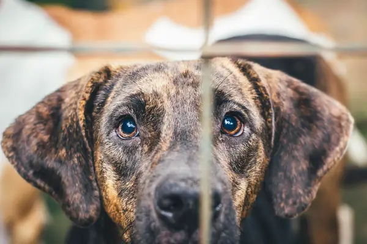

Somos uma organização dedicada à proteção animal, atuando no resgate de animais abandonados e vítimas de maus-tratos.
Oferecemos atendimento veterinário, alimentação, abrigo seguro e acompanhamento contínuo, além de promover a conscientização sobre guarda responsável.
Após a recuperação, os animais são encaminhados para adoção responsável, garantindo uma nova chance de vida com amor e dignidade.